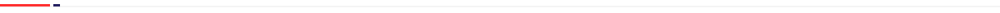
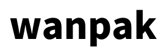
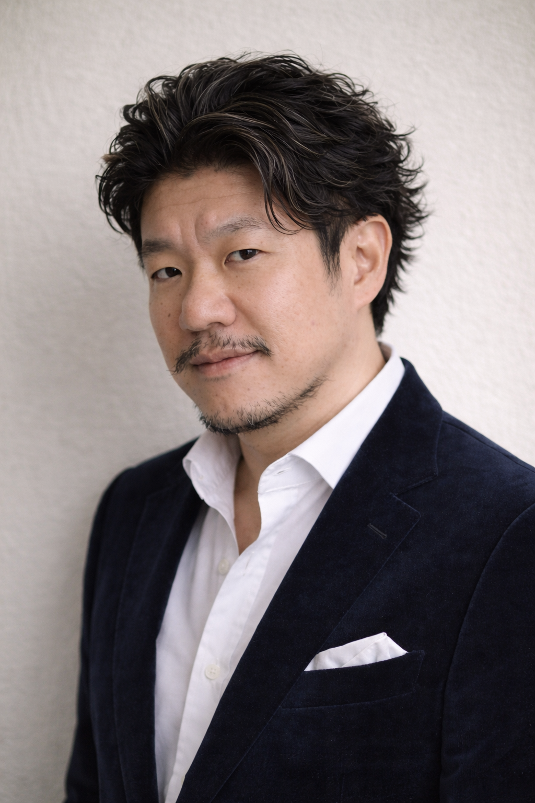

MASS CUSTOMIZATION PLATFORM
新しいモノづくりのOSを、社会実装する。
職人技×デジタル技術で、その人のための道具を生み出す。
必要な人に、必要なものを、必要なだけ。
モノづくりを、
わんぱくに。
世界は長い間、「同じものを大量に作る」ことで発展してきた。
しかし今、その仕組みは限界を迎えている。
人の身体は一人ひとり違う。空間も、目的も、使い方も違う。
それなのに、使う道具は同じままでいいのだろうか。
本来モノづくりとは、誰かのために作られるものだったはずだ。
wanpakは、職人の技術とデジタルファブリケーションを融合し、
人と環境に最適化されたモノづくりを実現する。
大量生産でもない。完全な一点物でもない。
必要な人に、必要なものを、必要なだけ。
私たちは、モノづくりをもう一度
人のための行為へと取り戻す。


wanpak企画、設計、製造、サービスまで。モノづくりのプロセスを分断せず、一つのパッケージとして実行するという思想。
子どもの頃の遊びのように、好奇心のままに試し、作り、失敗し、また挑戦する。そんな自由な発想とエネルギーを仕事にも持ち込みたいという想い。
技術の境界を越え、領域を越え、仲間を巻き込みながら新しい価値を生み出す。
wanpakは「One Pack」と「わんぱく」を掛け合わせた、私たちのモノづくりの姿勢そのものです。

これまで私は、自動車・EV・モビリティ・3Dプリンタ・医療機器など、 多様な分野で製品開発に従事してきました。
その中で一貫して感じていたのは、「本当に必要な人に最適化された製品が届いていない」という課題です。
大量生産では満たせない個々のニーズに対して、 設計・製造・サービスを一体で提供することで、 初めて価値が最大化される。
wanpakは、その思想を実現するための会社です。
新しいモノづくりのOSを社会実装し、必要な道具が必要な人のもとに届く世界をつくります。
wanpakは、マスカスタマイゼーションの基盤（OS）を構築し、
「その人のための道具」が届くエコシステムを社会に実装する。
すべての人は、既製品では満たされない固有のニーズを持っている。 職人の技とデジタル技術を融合させ、あらゆる道具を「使う人」の目的・環境に合わせて最適化する。 大量生産が生み出す「ちょうどいい妥協」ではなく、一人ひとりの「絶対的にこれだ」を届けることが我々の使命だ。
作りすぎず、余らせず、捨てない。「使う人」に最適化された製品が、必要なタイミングで、必要なかたちで生まれるエコシステムを実現する。 我々は、モノづくりの常識を根底から覆し、そのあり方そのものを変える。
モノづくりは、本来誰かのために作られるものだった。
しかし現代の製造業は、大量生産の仕組みの中で「平均的な製品」を作り続けている。
人の身体は違う。空間は違う。目的も違う。
それなのに、道具は同じでいいはずがない。
wanpakは職人の技術とデジタル技術を融合し、
個人と環境に最適化されたモノづくりを実現する。
作りすぎない。余らせない。捨てない。
必要な人に、必要なものを、必要なだけ。
それが次のモノづくりのスタンダードだ。
アスリートのギアも、部屋に置かれた家具も、その人の身体、配置される場だけでなく、光の入り方、床の硬さ、周りの雰囲気と結びついて価値を増す。我々が目指すのは、単体で完璧な製品ではない。
必要な人のために、必要なものだけを作る。それが結果として、余計なものを生まない。環境への責任は、私たちにとって目的ではなく、正しい作り方をした先にある必然だ。
完成した瞬間が、終わりではない。身体は変わる。暮らし方も、少しずつ動いていく。余白とは、未来の自分が手を加えるための隙間だ。我々は、そこまで含めて設計する。
スポーツの現場で得た気づきが、家具の設計を変えることがある。我々が特定の業界に根を張らないのは、どこにも属さないことで、それぞれの領域では生まれなかった答えを持ち込めると知っているからだ。
wanpakは、マスカスタマイゼーション基盤の構築を核として、
職人技×デジタル技術を融合したプロダクト・サービスを提供します。
あらゆるスポーツのアスリートへ、競技性とコンディションに最適化した道具を適時提供。結果の最大化と競技寿命の延伸を実現します。
スポーツ用品に留まらず、日用品・家具など全ての製品カテゴリにおいて、使う人にとっての「絶対的価値」を具現化します。
個人住宅・職場・公共施設などの空間と製品の関係を最適化し、環境・景観の価値を最大化するソリューションを提供します。
スポーツ用品・日用品・家具・モビリティ等の企画・開発・製造・販売
職人技×デジタルファブリケーションの融合支援・コンサルティング
3Dモデリング・スキャン・プリント等の設計・製造支援サービス
身体機能に関する研究開発、アスリート支援・育成プログラムの企画運営
初期フェーズではアスリート向けカスタムギアを中心に展開し、そこで培った技術と設計ノウハウを医療補助具・生活製品・家具など多領域へ展開していきます。
| 会社名 | 株式会社wanpak（設立準備中） |
|---|---|
| 代表取締役 | 新井 浄 / Jo Arai |
| 設立予定 | 2026年6月 |
| 所在地 | 東京都大田区（詳細は設立後に公開） |
| 事業内容 |
01 業界横断型マスカスタマイズ製品の企画・開発・製造・販売 02 職人技とデジタルファブリケーションの融合支援・コンサルティング 03 3Dモデリング・スキャン・プリント等のデジタルものづくり支援 04 アスリート支援、身体機能に関するR&Dおよびコンサルティング 05 海外製品の輸入販売・グローバルサプライチェーン構築 |
| パートナー |
株式会社magarimono（製造・技術パートナー） 一般社団法人日本競輪選手会 神奈川支部（連携パートナー） |
| 連絡先 | wdi.jo.arai@gmail.com |
| 営業時間 | 平日 10:00 – 18:00（事前予約制・オンライン可） |
まずはお気軽にご相談ください。
マスカスタマイズの導入・共同開発・取材・パートナーシップなど、柔軟に対応いたします。